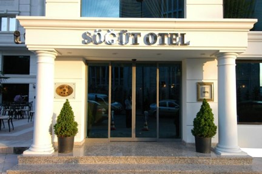

Plan putovanja Istanbul:
DAN 1 - AJA SOFIJA
Džamija Aja Sofija je simbol Istanbula i često se naziva osmim svetskim čudom. Sagrađena je pre skoro 1500 godina kao pravoslavna patrijaršijska crkva i bila je arhitektonsko čudo svog vremena (za nju su rekli da je promenila istoriju arhitekture) — a i dan danas je jedna od najimpresivnijih i najlepših građevina na svetu. Aja Sofija danas nije ništa manje veličanstvena nego kada je sagrađena. Iako je nagriza zub vremena, turske vlasti svojski rade na tome da je održe u dobrom stanju i građevina stvarno izgleda neverovatno i spolja i iznutra.
DAN 2 - DOLMABAHČE PALATA
Dolmabahče je najveća i najlepša palata u Turskoj. Smeštena u istanbulskom okrugu Bešiktaš, palata Dolmabahče je služila kao administrativni centar Otomanskog carstva u 19. i 20. veku. Palatu je sagradio Abdulmedžid I, 31. otomanski sultan koji je odlučio da napravi grandioznu palatu po ugledu na evropske kraljevske palate. U njoj se nalazi 285 soba, 44 hale, 68 toaleta i 6 turskih kupatila. U Dolmabahče palati je živelo 6 osmanskih sultana — a nakon pada Osmanlijskog carstva, palata je prešla u ruke nove vlade. Osnivač i prvi predsednik Republike Turske, Mustafa Kemal Ataturk je palatu koristio kao predsedničku rezidenciju — i u njoj umro 1938. godine.
DAN 3 - RAMS PARK, SUKRU SARACOGLU STADION I VODAFONE PARK
RAMS park je fudbalski stadion koji služi kao domaći teren za Superligaški klub Galatasaraj. Nalazi se u četvrti Sejrantepe u okrugu Sarijer, na evropskoj strani Istanbula, Turska. Stadion sa svim sedištima ima kapacitet da primi 53.978 gledalaca tokom fudbalskih utakmica. Rams Park je deo sportskog kompleksa Ali Sami Jen, nazvanog po osnivaču kluba. Rams Park je bio prvi stadion u Turskoj koji je ispunio uslove UEFA Euro 2016 tokom kandidature zemlje za domaćina Evropskog prvenstva. Godine 2011, Rams Park je bio jedan od šest nominovanih za kategorije „Mesto godine“ i „Novo mesto“ za nagradu Stadium Business Award. Rams Park je jedno od potencijalnih mesta za UEFA Euro 2032.
Stadion Sukru Saracoglu, poznat po sponzorskim razlozima kao Ulker stadion, je fudbalski stadion koji se nalazi u Istanbulu, Turska. To je tradicionalni dom velikog turskog multi-sportskog kluba Fenerbahče SK. Stadion je svečano otvoren 1908. i renoviran između 1929. i 1932, 1965. i 1982. i 1999. i 2006. Ovaj stadion je bio prvi novi fudbalski teren među vrhunskim turskim klubovima i jedan od prvih u talasu sportskih investicija širom Turske. Stadion je izabran i za UEFA Kup 2009. godine, poslednji put pre nego što je turnir preimenovan u Ligu Evrope. Ima kapacitet od 50.520 mesta.
Vodafon park je svestrani, višenamenski stadion u okrugu Bešiktaš u Istanbulu, Turska. To je stadion Bešiktaša. Stadion je izgrađen na mestu nekadašnjeg stadiona Bešiktaša, BJK Inonu stadion. Ima kapacitet od 41.188 sedećih mesta. Novi stadion takođe ima 2.123 kvadratnih metara restorana, 2.520 kvadratnih metara terasa restorana i VIP parking kapaciteta od 600 vozila. Tlo je "pametan stadion", gde fanovi uživaju u stadionskoj viziji i brzoj Wi-Fi tehnologiji.
REZERVACIJA PUTOVANJA

Avio aranžman:
Autobus aranžman:
Izvršite rezervaciju